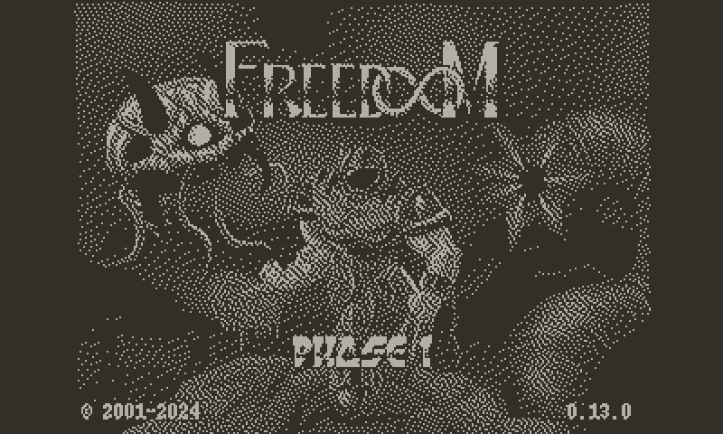
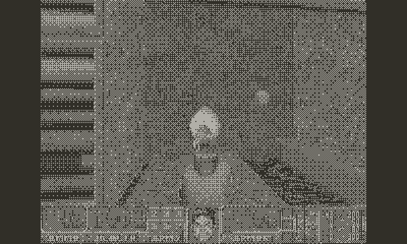
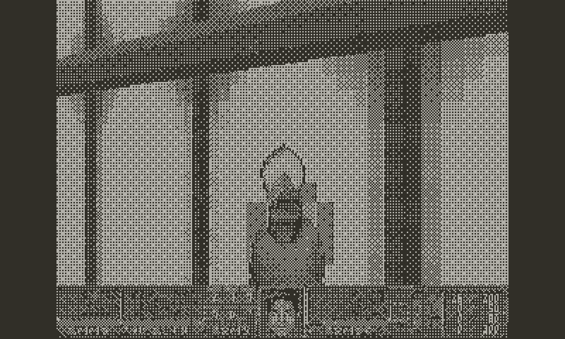
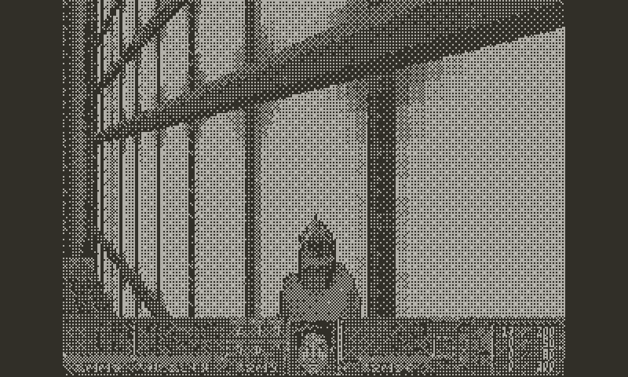

Free game for Playdate
The classic Doom engine, running on the Playdate, with the crank to aim. The levels, monsters and art are Freedoom's: a free, community-made replacement for the original game's data, so everything here can be shared.
Getting a game made for 1990s PCs onto a small handheld meant new work: the 256-colour picture is turned into 1-bit with dithering and automatic exposure, the 28 MB of game data is read in small pieces, and long loading jobs pause so the Playdate never thinks the game has frozen.




Version 1.0
It is Doom's engine (id Software released its source code in 1997), with Freedoom's free game data instead of the original's. If you own Doom, you can copy your own doom.wad into the game's data folder (Data/com.braq.freedoom, in Data Disk mode) and play the original. It is not included and may not be shared.
About 13 to 25 frames a second on a real Playdate, depending on the scene. There is no music yet, only sound effects.
The engine is under the GNU GPL, so the whole game's source, including everything written for the Playdate, is in the download above. It builds the game from scratch with the Playdate SDK.
Made by Boraq Abdulmajeed. Built on doomgeneric (GPL) and Freedoom (BSD licence). Doom is a trademark of id Software; Playdate is a trademark of Panic Inc. This project is not made or endorsed by id Software, Bethesda or Panic.